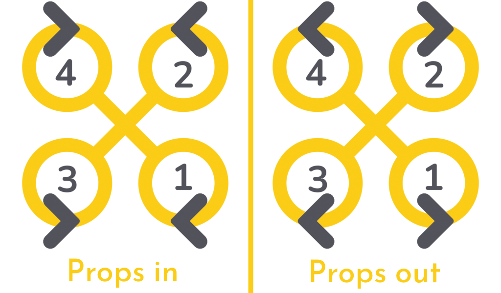
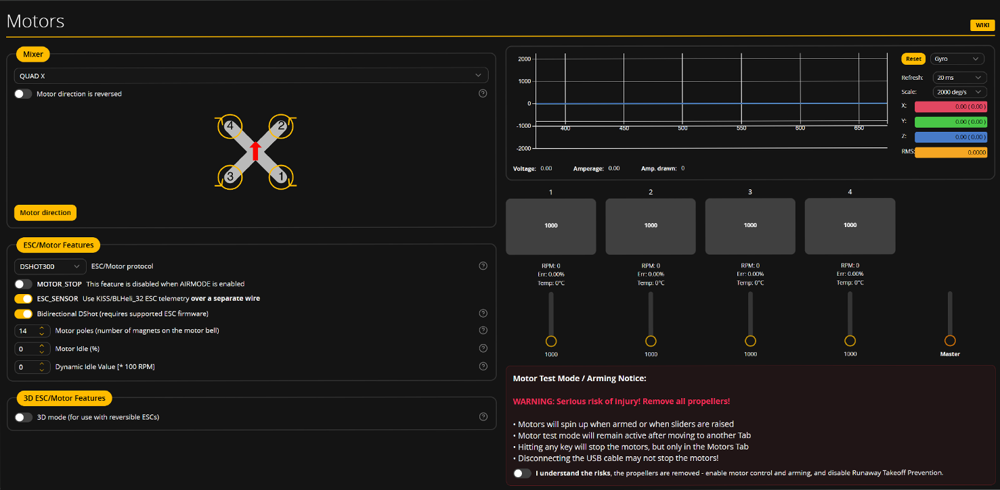
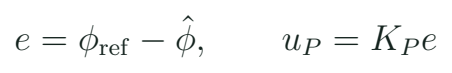
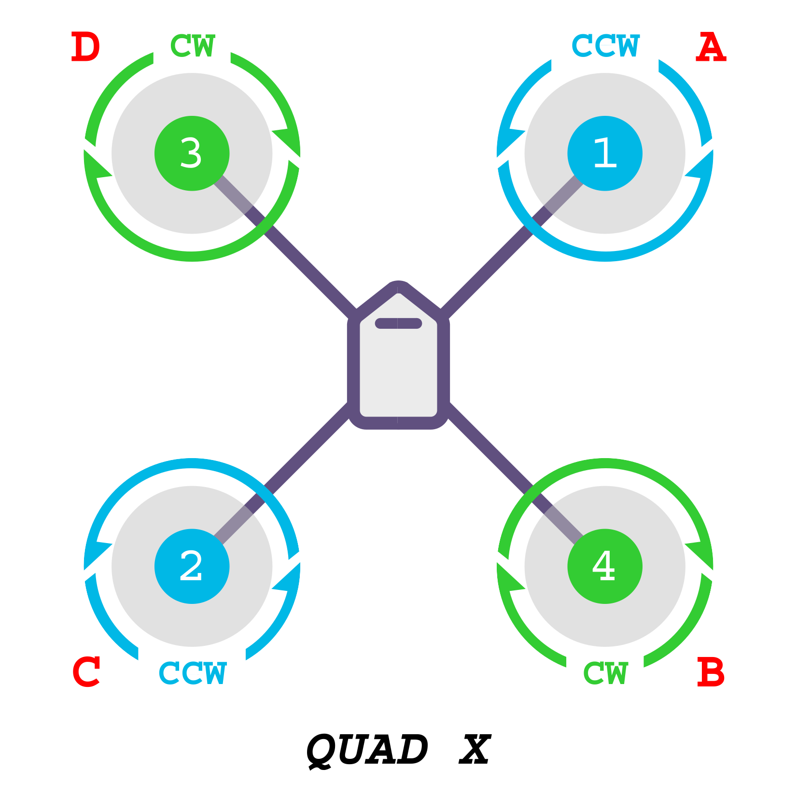

Motores, control y comprobaciones antes del taller
Distinguir número, sentido y hélice de cada motor y explicar las comprobaciones de un sistema de control.
Tres preguntas por motor
Qué motor se activa, en qué sentido gira y qué hélice le corresponde son tres preguntas distintas. Corregir una no demuestra las otras. La geometría de un quad y su sistema de control usan una asignación de salidas; el número de motor se interpreta según firmware y configuración. Por eso se conserva el esquema que pertenece al equipo mostrado y se marca su frente antes de comparar.

Pruebas que se mantienen separadas
| Pregunta | Evidencia | Condición de banco |
|---|---|---|
| ¿Cuál se activa? | Salida y posición observadas | Prueba del docente sin hélices |
| ¿En qué sentido gira? | Sentido de ese motor | Comprobación individual |
| ¿Qué hélice corresponde? | Forma, orientación y sentido | Revisión con energía desconectada |
Cambiar una opción de dirección en la pantalla no demuestra por sí solo que el ESC haya cambiado el giro físico. El resultado se observa y se registra. La hélice no se instala para investigar con la mano si una salida empuja. La sesión 7 completa el montaje; las pruebas energizadas usan el procedimiento docente y el área de banco controlada.
ESC, protocolo y prueba de salidas

El ESC interpreta órdenes del controlador y gobierna la conmutación del motor. PWM analógico y DShot no se configuran como si fueran el mismo protocolo. Los endpoints de un sistema analógico pueden necesitar el procedimiento correspondiente; no se aplica automáticamente una calibración de gas analógica a DShot. La disponibilidad de telemetría también depende del firmware y hardware del ESC.
Primero se confirma compatibilidad de protocolo y conexión. Después se comprueba cada salida con el método del fabricante y del firmware. El curso no prescribe un porcentaje universal de prueba ni una frecuencia única para todos los equipos. La evidencia es una tabla de posición, salida y sentido, obtenida en el banco que prepara Gerard.
Una opción y una observación
Se cambió “dirección invertida” en el mezclador. ¿Podemos afirmar que todos los motores físicos invirtieron su giro?
Ver razonamiento del caso
No. La opción y el giro observado pertenecen a comprobaciones relacionadas, pero distintas. Debe verificarse cada motor y conservar la correspondencia con el esquema.
Control: referencia, medición y corrección
Un sistema de control compara una referencia con una medición o estimación y genera una acción. En un quad, la IMU aporta información de movimiento; el firmware organiza la estabilización y distribuye las órdenes entre motores. Este curso enseña a reconocer esa cadena y a identificar errores de montaje que la contradicen. No pretende diseñar un autopiloto desde cero dentro de ocho sesiones.

Una corrección con unidades
Para referencia 5° y estimación 3°, con Kp = 2 unidades/°, ¿cuál es la acción proporcional del ejemplo?
Ver razonamiento del caso
El error es 2° y la acción es 4 unidades. El signo físico depende de la convención y de cómo se asignen las salidas. No se traducen esas unidades directamente a un porcentaje de motor.
Qué aporta cada término
| Término | Idea introductoria | Qué revisar |
|---|---|---|
| P | Respuesta al error presente | Signo y ganancia |
| I | Acumulación del error en el tiempo | Saturación y condición de uso |
| D | Respuesta al cambio de una variable | Ruido y filtrado |
Una vibración no se diagnostica cambiando ganancias al azar. Primero se revisan hélices, uniones, montaje, ejes, configuración y registro. PID y filtros requieren un bloque posterior de ajuste con el equipo identificado; aquí se conservan como conceptos que ayudan a comprender la puesta en marcha.
El mismo principio en el dron con autopiloto

Pixhawk describe una familia de hardware; ArduCopter es el firmware para multirrotores de ArduPilot; Mission Planner es la estación de tierra utilizada para configuración y observación. El equipo grande del curso muestra cómo se añaden módulo de potencia, GPS, brújula y telemetría según sus componentes. No todas las placas o versiones tienen las mismas conexiones ni funciones.
Se presenta el esquema de ArduPilot y se contrasta con el equipo pequeño. El principio es común: sensor orientado, mando interpretado y salidas correspondientes. La numeración y los parámetros cambian. Se consultan también selección de bastidor, calibraciones y estado previo al armado del equipo real; los mensajes de condición se investigan en lugar de ocultarlos para que la demostración continúe.
Enlace perdido y decisiones de configuración
La respuesta a una pérdida de mando se define por el sistema y por la operación. El receptor y la controladora deben comunicar esa condición de forma coherente. Una recepción que conserva valores aparentemente normales puede ocultar el problema a la FC. Se consulta el manual de la combinación y se comprueba la condición en el banco preparado, sin hélices y sin trasladarla a un ensayo de pérdida de enlace en vuelo.
Revisión antes de los presenciales
| Elemento | Qué debe quedar identificado |
|---|---|
| Armado / desarmado | Control y estado del sistema |
| Canales y modos | Asignación y respuesta previstas |
| Ausencia de enlace | Indicación y comportamiento documentados |
| Energía y batería | Configuración y medida coherentes |
| Salidas | Motor, posición y sentido registrados |
- Completa la tabla de motores desde el esquema específico.
- Explica una discrepancia entre salida y posición, y otra entre sentido y hélice.
- Distingue la prueba de enlace de la prueba de motores.
- Resuelve la acción proporcional del caso y relaciona error de ejes con respuesta equivocada.
- Prepara las preguntas que observarás en el taller de ensamblaje.
Al terminar la sexta sesión, el expediente debe permitir anticipar las comprobaciones, no declarar un vehículo apto sin examinarlo. Las sesiones 7 y 8 convierten esas expectativas en observaciones y diagnóstico.
Qué se simula y qué se comprueba en el objeto
Mission Planner puede utilizar SITL, una simulación de software de ArduPilot. Sirve para observar estados y explorar una misión de ejemplo sin usar una aeronave física. El modelo y la versión de simulación también se registran: la documentación indica que esta ruta puede utilizar código de desarrollo. Sus resultados no prueban la calidad de una soldadura, la alimentación o la respuesta de un ESC del dron real.
Herramienta y evidencia
| Recurso | Qué permite estudiar | Qué se comprueba aparte |
|---|---|---|
| Betaflight App | Configuración y estado de una FC | Dinámica real y montaje |
| SITL + Mission Planner | Comportamiento del modelo de software | Hardware y entorno físico |
| Banco sin hélices | Conexiones y correspondencias observadas | Vuelo del conjunto |
| Demostración de vuelo | Comportamiento observado en ese caso | Otras condiciones no ensayadas |
La simulación es una extensión guiada y se prepara antes de clase. El docente conserva un caso funcional y una alternativa de capturas si una descarga falla. La ruta principal no depende de que veinticinco alumnos instalen y solucionen simultáneamente un entorno nuevo durante la demostración. El siguiente bloque se concentra en el ensamblaje visible de los equipos de MECRO.
Práctica guiada
- Distinguir motor activado, giro y hélice antes de la prueba.
- Mostrar una pantalla Motors y explicar sus correspondencias físicas.
- Resolver el ejemplo de error y acción proporcional.
- Contrastar Betaflight, ArduPilot y SITL sin mezclar sus evidencias.
Preguntas de cierre
¿Se copia el orden de motores entre firmwares?
No. Se comprueba el esquema, el bastidor y la configuración de cada uno.
¿DShot exige por defecto la calibración analógica del gas?
No. Se sigue el procedimiento específico del protocolo y ESC compatibles.
¿Una simulación valida una soldadura?
No. El hardware requiere sus propias comprobaciones.
Entrega
Tabla de motores y modos, caso de control resuelto y plan de comprobaciones.
Fuentes para ampliar
[MOTORS] Betaflight. Motors Tab.
[APMOTOR] ArduPilot. Conexión, orden y sentido de motores.
[APCONFIG] ArduPilot. Mandatory Hardware Configuration.
[FAIL] Betaflight. Failsafe.
[GPS] Betaflight. GPS y funciones asociadas.
[SITL] ArduPilot. Mission Planner Simulation.
[BOOK] Beard y McLain. Small Unmanned Aircraft: Theory and Practice, Princeton University Press, 2012; referencia de profundización en dinámica y control.